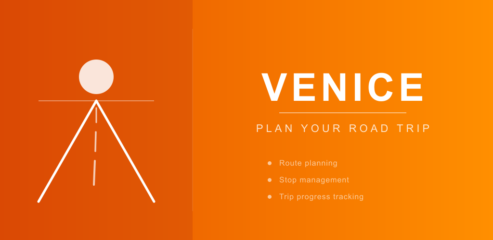

1024 × 500 px — Play Store feature graphic
Extends the app icon motif — sunset road with sun, title and tagline above the vanishing point. Consistent branding.
Dark navy with a red route line connecting stop pins — directly represents the app's core feature. Destination flag at the end.
Purple-to-orange sunset sky with layered mountain silhouettes and road. Scenic, atmospheric, adventurous.
Split layout: icon replica on the left, title and feature list on the right. Informative and professional.

Bold typography-first design on deep red. Subtle V-road watermark behind the text. Clean and modern.